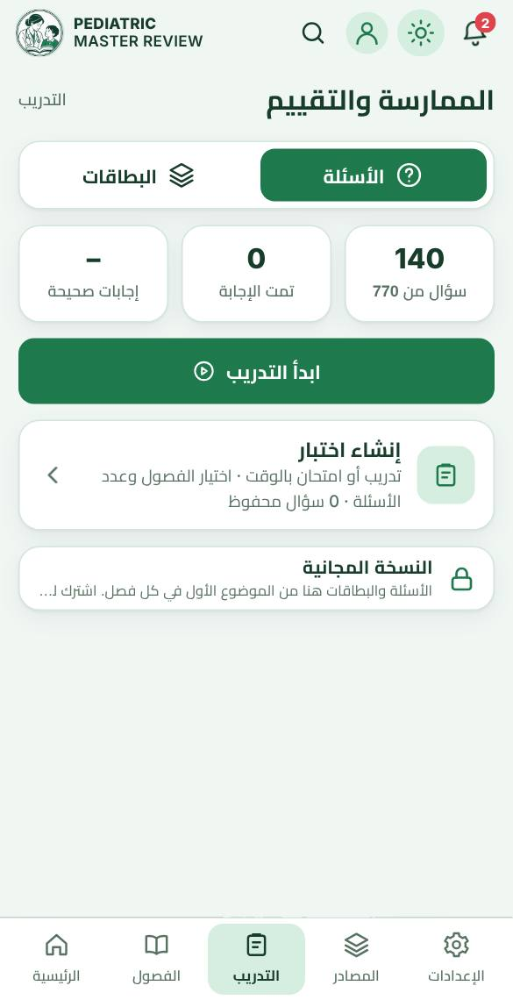
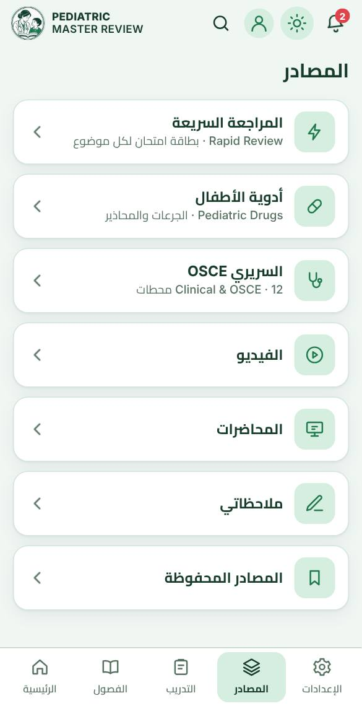

1ابدأ بالفصل والموضوع
افتح «الفصول»، واختر الفصل ثم الموضوع، واقرأ صفحاته بالترتيب. يحفظ التطبيق آخر صفحة لتتابع منها.

2ثبّت فهمك بالأسئلة
من «التدريب» أنشئ اختبارًا: الوضع، ونوع الأسئلة، والفصول، والمستوى، والعدد؛ واقرأ الشرح بعد كل إجابة.

3راجع بالبطاقات
بطاقات اليوم من الرئيسية، أو بطاقات فصل أو موضوع؛ اقلب البطاقة ثم اختر: أعرفها أو أعدها لاحقًا.

4المصادر
المراجعة السريعة، وأدوية الأطفال، ومحطات OSCE، والمحاضرات والفيديو، وملاحظاتك المحفوظة.

5علّم واحفظ
حدّد النص لتظلّله أو تضع خطًّا تحته أو تكتب ملاحظة، واحفظ الموضوع بالعلامة لتعود إليه بسهولة.

6تابع تقدّمك
علّم الصفحة «قرأتها» أو «أتقنتها»، وتابع نسبة التقدّم وأيام المذاكرة المتتالية من الرئيسية.